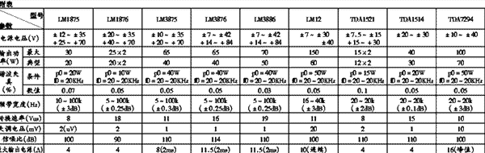

现在许多电脑爱好者都配备了有源音箱，也许在你听过一段时间后会发觉即使是木制音箱，听起音乐来总觉得有什么地方欠缺些什么－高不成低不就。于是你打开音箱，换音频偶合电容，增添电源滤波电容，或许连功放电路板也搬了家，大功告成，试听，发觉音质也没多大的改善。究其原因，也就是印证了一句话：一分价钱一分货。现在大多数的发烧友买的有源音箱都是两百来块的廉价品，当然不会出什么天籁之音（本人也是贫民，一对箱子花了我RMB220，但价廉物可不美）。
由于一般的有源音箱为成本所限，用料都比较差，当然我们可以做适当的改善，但是有些地方是比较麻烦的。比方说，电源变压器的功率不够，当要表现大音量时失真较严重，这是你再加多少滤波电容都无法改变的。还有音箱的最重要部分：扬声器，我们先不谈论其做工和质量，就其4.5英寸纸盆的低音，频率响应一般在80Hz～20KHz，要想低频潜得更深，非得选用大口径的扬声器（书架箱的低音扬声器也要6.5英寸)。至于高音部分也不是十分清晰。我发现，现在中低档的产品中，功放器输出的音频信号是直接接到高低音扬声器上，用一小电容做分频器，分频点与这只电容的质量有很大的关系，本人为了花小钱办“大事”，特地去买了一对两分频器，由于箱体内空间狭小，主音箱容不下，于是“大刀阔斧”，将主音箱内的变压器连根拔起（这只变压器在箱体内产生严重的电磁干扰，对音质的干扰不容忽视，早想拔掉这颗眼中钉），换上100W的（外置）。全部工作在最短的时间内完成，开机试听，高音确实比以前有所改善，特别是听CD，高音清晰多了。试听时，将音量稍开大，低音失真严重，于是找出以前买的T＆T4.5英寸40W（防磁8欧姆）换上，由于尺寸相同，倒没费多少工夫。开机试听，这回将音量尽量开大，功率是够了，可是出来的低音浑浊，这是小口径音箱的通病，实非吾能解决。（有些人在改善音箱音质时，会加上一级前置功放器，其实现在的声卡本身已带功率放大，如果你不满意倒可以将其屏蔽，推荐买一块NE5532前置板，可谓价廉物美。）
通过以上的改装，虽不能说有质的飞跃，但应付一般的电脑听音环境，我认为够了。在这里要说的是，本人除了分频器，其余的材料都是现成的，如果你也想来个大刀阔斧，本人劝你还是省省吧，攒点钱去买个HI－FI级的音箱，那感觉只有你亲身体会才会了解。下面的附表给出了一般有源功放模块的一些参数。一般在说明书上多将音箱内功放模块参数写出，你不必在被它外包装上吓人的3XXW、5XXW而纳闷，那不过是一种哗众取宠的工业参数（仅供参考）。
在此本人有点小意见给一些编写有关媒体播放器程序的作者，本人发现现在一些媒体播放器的音量控制有一点小“BUG”，当你将音量控制按钮置于音量最小处，然后将鼠标移至音量控制的最上方，点一下鼠标，这时音量会突增，如你已将音箱音量开得很大，很可能会因电流太大冲击将功放模块烧损，（我就这样烧过一片TDA2030A），所以小生在这里说一下，希望在以后编程时将音量控制来个数控化，尽量减少一些不必要的损失。
(上海 邵勇) |